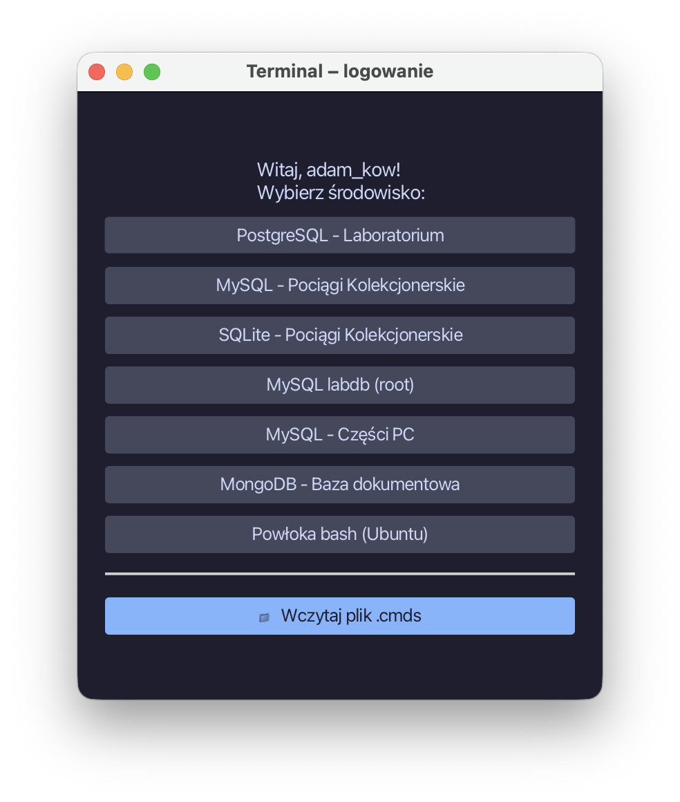
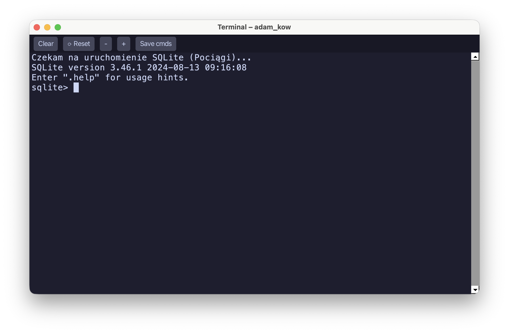
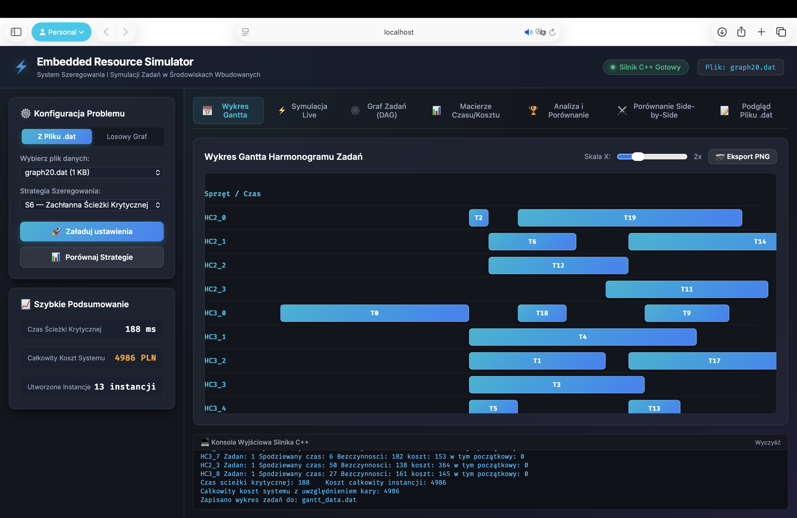
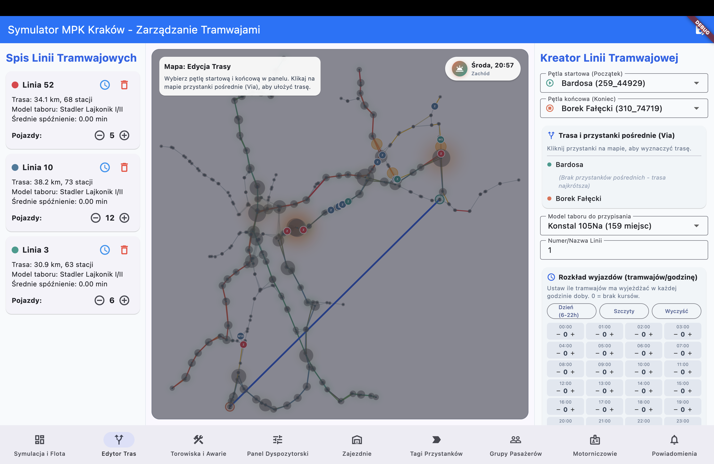
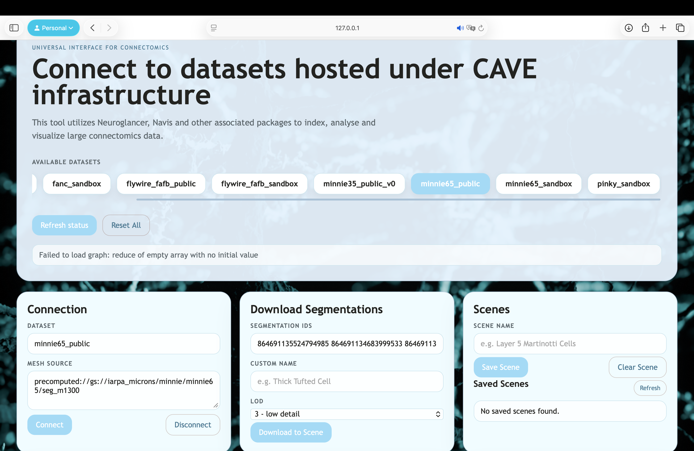
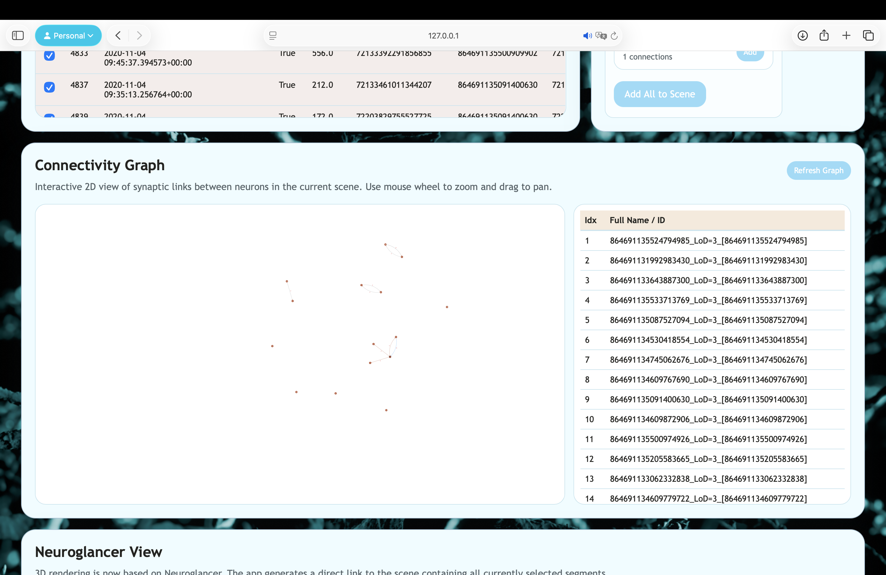
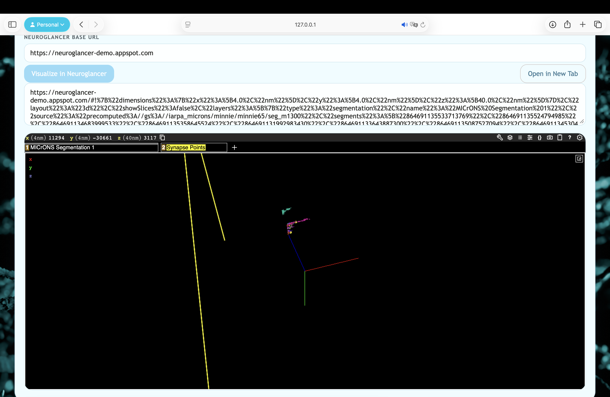

1. Terminal Gateway Emulator
Developing a Master's thesis project enabling secure multi-user access to isolated lab environments running on Docker pods connected via TCP. Implementing server orchestration using Python and building a robust client application in Java with JediTerm.


Key Features & System Architecture
-
Docker Container Isolation: Every user receives an isolated Linux PTY environment (Bash or MySQL) preventing host system compromise.
-
Admin Control & Session Monitoring: Designing an admin panel for monitoring active sessions, managing user access, and bulk importing users.
-
JediTerm + SwingNode Integration: Fully functional JetBrains terminal component embedded in JavaFX with ANSI color, monospaced font, and cursor control.
-
TCP Protocol & JSON Auth: Custom communication protocol featuring Auth Handshake, TTY data streaming, and dynamic window resize frames (WINCH).
-
Session & Pseudoterminal Management: Low-level handling of POSIX master/slave pair (/dev/ptmx) on the Python server with seamless session restarts.
// Connect to Terminal Gateway over TCP Socket
public class TerminalClient {
public void startSession(String host, int port) {
Socket socket = new Socket(host, port);
JSONProtocol.sendAuthHandshake(socket, username, sessionConfig);
// Embed JediTerm widget into JavaFX scene graph via SwingNode
SwingNode swingNode = new SwingNode();
JediTermWidget widget = new JediTermWidget(socket.getInputStream(), socket.getOutputStream());
swingNode.setContent(widget);
}
}2. Embedded Resource Task Simulator
Engineered a high-performance C++17 simulation engine for task scheduling and resource optimization in resource-constrained embedded systems. Built an interactive Web GUI featuring real-time DAG graph execution, strategy benchmarks, and Gantt charts.

Key Features & System Architecture
-
Mathematical DAG Modeling: Application representation as a Directed Acyclic Graph G = (V, E) alongside Hardware Cores (HC) and Processing Elements (PE).
-
Time & Cost Execution Matrices: Objective function computation across execution time t(T_i, H_j) and execution cost c(T_i, H_j) with dynamic penalty functions.
-
8 Proprietary Scheduling Strategies: S1 (Min-Time Dedicated), S2 (Min-Cost Dedicated), S3 (Instance Reuse), S5 (BFS Level-Order), S6 (Critical Path Greedy), S8 (Cost-Time Tradeoff with Penalty).
-
Real-Time Live Simulation: Playback controls (Play, Pause, Step, Reset, tempo slider 20ms - 1000ms, speed shortcuts 0.5x to 10x) and dynamic CPU core cards.
-
Parallel Multi-Core Benchmarks & JSON Export: Asynchronous Python REST server executing parallel simulation benchmarks across cores and exporting batch JSON data for analysis.
// Run simulation strategy S8
int main(int argc, char* argv[]) {
TaskSchedulerSimulator simulator;
simulator.loadConfig("data/graph20.dat");
// Critical path calculation & penalty-refined allocation
ScheduleResult result = simulator.runStrategy(8);
result.exportToJSON("gantt_data.json");
std::cout << "Time: " << result.totalTime
<< " Cost: " << result.totalCost << std::endl;
}C++17 Scheduling Strategy Matrix
3. TramSimulator — MPK Kraków Engine
Architected a high-throughput, multi-threaded simulation engine using Dart Isolates to offload complex graph computations and passenger routing from the UI thread. Powered by real-time Dijkstra pathfinding and custom Min-Heap event priority queues.

Key Features & System Architecture
-
Dart Isolates Multi-Threading: Offloading graph computations, Dijkstra pathfinding, and passenger routing from the main UI thread onto concurrent Dart background isolates.
-
Thread-Safe State Synchronization: Non-blocking event streams (StreamController) and reactive state management for zero-latency game state persistence.
-
Custom Min-Heap Data Structure: Low-overhead binary heap (_MinHeap) driving event priority queues in PassengerSystem and node expansion.
-
Stochastic Delay Model: TramDelayModel simulating infrastructure failures, emergency depot dispatches, passenger exchange times, and traffic density.
-
Custom Canvas Painter (MpkPainter): Smooth 60 FPS rendering of physical tracks, stops, real-time tram positions, and day/night cycles.
// Multi-hop passenger route optimization
class TransitRouter {
RoutePlan findFastestRoute(StopNode origin, StopNode dest) {
final priorityQueue = _MinHeap<SearchNode>();
priorityQueue.insert(SearchNode(origin, cost: 0.0));
while (!priorityQueue.isEmpty) {
final current = priorityQueue.extractMin();
if (current.node == dest) return current.buildPlan();
// Edge relaxation with transfer penalties
relaxConnections(current, priorityQueue);
}
}
}4. Neuroglancer — MICrONS Connectomics Interface
Engineered a solution to explore large-scale connectomics datasets and generate 3D Neuroglancer views. Utilized Python (pandas, numpy, ThreadingHTTPServer) for data processing and integrated D3.js and specialized libraries (caveclient, cloud-volume) for advanced data visualization.



Key Features & System Architecture
-
MICrONS Dataset Exploration: Dedicated web UI to search neural segment IDs, overlay segmentation masks, and filter synaptic data from the CAVE database.
-
Dynamic Neuroglancer View Generation: Programmatic construction of visualization states and unique URLs configured with WebGL 3D camera angles and volume layers.
-
Synaptic Connectivity Analysis: Integration with materialization tables to analyze axonal and dendritic connectivity between selected neurons using pandas and numpy.
-
Volumetric Scene State Persistence: Persistent saving and loading of research sessions to restore exact segmentation states without re-querying.
# Generate viewer state URL for Neuroglancer
def generate_neuroglancer_url(segment_ids, dataset="minnie65"):
client = CAVEclient(dataset)
viewer_state = neuroglancer.ViewerState()
# Attach EM volume and segmentation layers
viewer_state.layers['em'] = neuroglancer.ImageLayer(source=client.info.image_source())
viewer_state.layers['segmentation'] = neuroglancer.SegmentationLayer(
source=client.info.segmentation_source(),
segments=segment_ids
)
return neuroglancer.to_url(viewer_state)